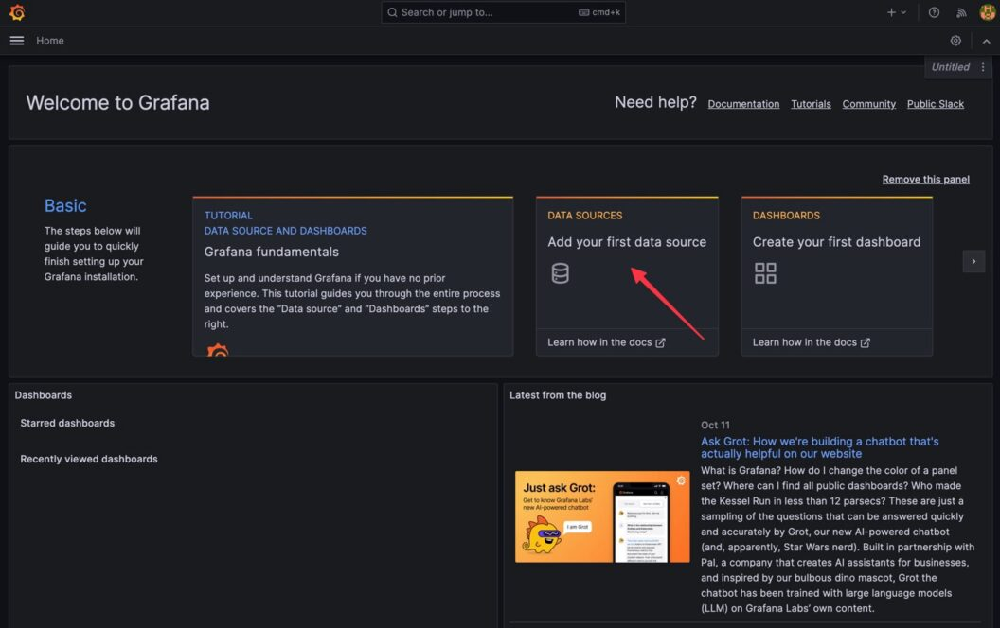

Part 5
Topics
- Rancher
- Network Policies
- Metric Server
- Configure HPA
- Logging with Grafana Loki
- Monitoring with Prometheus
- Enable Audit logs
Rancher (Kubernetes Management Tool)
-
Rancher is a Kubernetes management tool to deploy and run clusters anywhere and on any provider.
-
Rancher can provision Kubernetes from a hosted provider, provision compute nodes and then install Kubernetes onto them, or import existing Kubernetes clusters running anywhere.
-
Rancher adds significant value on top of Kubernetes, first by centralizing authentication and role-based access control (RBAC) for all of the clusters, giving global admins the ability to control cluster access from one location.
-
It then enables detailed monitoring and alerting for clusters and their resources, ships logs to external providers, and integrates directly with Helm via the Application Catalog. If you have an external CI/CD system, you can plug it into Rancher, but if you don’t, Rancher even includes Fleet to help you automatically deploy and upgrade workloads.
-
Rancher is a complete container management platform for Kubernetes, giving you the tools to successfully run Kubernetes anywhere.
-
Rancher Installation on docker
sudo docker run --privileged -d --restart=unless-stopped -p 80:80 -p 443:443 rancher/rancher- Login to rancher
- Wait for atleast 4 to 5 mins
- Monitoring all node pods
- Try to deploy some pod/app
Get started with Kubernetes network policy
- Kubernetes network policy lets administrators and developers enforce which network traffic is allowed using rules.
- Kubernetes network policy lets developers secure access to and from their applications using the same simple language they use to deploy them. Developers can focus on their applications without understanding low-level networking concepts. Enabling developers to easily secure their applications using network policies supports a shift left DevOps environment.
- The Kubernetes Network Policy API supports the following features:
- Policies are namespace scoped
- Policies are applied to pods using label selectors
- Policy rules can specify the traffic that is allowed to/from pods, namespaces, or CIDRs
- Policy rules can specify protocols (TCP, UDP, SCTP), named ports or port numbers
Ingress and egress
- ingress is incoming traffic to the pod, and egress is outgoing traffic from the pod. In Kubernetes network policy,
- you create ingress and egress “allow” rules independently (egress, ingress, or both).
Default deny/allow behavior
- Default allow means all traffic is allowed by default, unless otherwise specified.
- Default deny means all traffic is denied by default, unless explicitly allowed.
Network Policy
- Create base setup (Default behaviour is all traffic is allowd)
- Create a namespace
kubectl create ns external- Test the default behaviour by creating pod and try to ping
kubectl run pod-1 --image=praqma/network-multitool
kubectl run pod-2 --image=praqma/network-multitool
kubectl run pod-3 --image=praqma/network-multitool -n external- Get Ip address
kubectl get pods -o wide
kubectl get pods -o wide -n external- Check connectivity from POD-1 to POD2 and POD-3 and Internet
kubectl exec -it pod-1 -- ping [pod-2-ip]
kubectl exec -it pod-1 -- ping [pod-3-ip]
kubectl exec -it pod-1 -- ping google.com- Rule 1: Deny all Ingress traffic
kubectl apply -f - <<EOF
---
apiVersion: networking.k8s.io/v1
kind: NetworkPolicy
metadata:
name: default-deny-ingress
spec:
podSelector: {}
policyTypes:
- Ingress
EOF- Check newly applied network policy
kubectl get netpol- Test incoming traffic should not be allowed
kubectl exec -it pod-1 -- ping [pod2-ip]
kubectl exec -it pod-1 -- ping [pod3-ip]
kubectl exec -it pod-1 -- ping google.com
kubectl exec -it pod-3 -- ping [pod1-ip]
kubectl exec -it pod-3 -- ping [pod2-ip]- Rule 2: Allow Ingress
kubectl apply -f - <<EOF
---
apiVersion: networking.k8s.io/v1
kind: NetworkPolicy
metadata:
name: allow-all-ingress
spec:
podSelector: {}
ingress:
- {}
policyTypes:
- Ingress
EOF- Test again
kubectl exec -it pod-3 -- ping [pod1-ip]
kubectl exec -it pod-3 -- ping [pod2-ip]- Rule 3: Deny All Egress:
kubectl apply -f - <<EOF
apiVersion: networking.k8s.io/v1
kind: NetworkPolicy
metadata:
name: default-deny-egress
spec:
podSelector: {}
policyTypes:
- Egress
EOF- Make a test
kubectl exec -it pod-2 -- ping google.com
kubectl exec -n external -it pod-3 -- ping [pod1]
kubectl exec -n external -it pod-3 -- ping [pod2]Rule 4 - PodSelector:
kubectl apply -f - <<EOF
apiVersion: networking.k8s.io/v1
kind: NetworkPolicy
metadata:
name: podselector-suspicous
spec:
podSelector:
matchLabels:
role: suspicious
policyTypes:
- Ingress
- Egress
EOF- Rule 5 - Ingress From:
kubectl label pod pod-1 role=securekubectl apply -f - <<EOF
apiVersion: networking.k8s.io/v1
kind: NetworkPolicy
metadata:
name: ingress-from-ips
spec:
podSelector:
matchLabels:
role: secure
ingress:
- from:
- ipBlock:
cidr: 192.168.0.0/16
except:
- 192.168.137.70/32
policyTypes:
- Ingress
EOFkubectl exec -n external -it pod-3 -- ping [pod-1]
kubectl exec -it pod-2 -- ping [pod-1]kubectl label pod pod-1 role-
kubectl delete -f netpol.yaml- Rule 6 - Egress To:
kubectl label pod pod-1 role=securekubectl apply -f - <<EOF
apiVersion: networking.k8s.io/v1
kind: NetworkPolicy
metadata:
name: egress-to-ips
spec:
podSelector:
matchLabels:
role: secure
egress:
- to:
- ipBlock:
cidr: 192.168.137.70/32
policyTypes:
- Egress
EOFkubectl exec -it pod-1 -- ping [pod-2]
kubectl exec -it pod-1 -- ping google.comkubectl delete -f netpol.yaml- Rule 7 - Namespace Selector:
kubectl apply -f - <<EOF
apiVersion: networking.k8s.io/v1
kind: NetworkPolicy
metadata:
name: namespace-selector
spec:
podSelector:
matchLabels:
role: secure
ingress:
- from:
- namespaceSelector:
matchLabels:
role: app
podSelector:
matchLabels:
role: reconcile
policyTypes:
- Ingress
EOFCreate ingress policies with pod selector color=blue on port 80
kind: NetworkPolicy
apiVersion: networking.k8s.io/v1
metadata:
name: allow-same-namespace
namespace: default
spec:
podSelector:
matchLabels:
color: blue
ingress:
- from:
- podSelector:
matchLabels:
color: red
ports:
- port: 80Allow ingress traffic from pods in a different namespace using namespaceSelector
kind: NetworkPolicy
apiVersion: networking.k8s.io/v1
metadata:
name: allow-different-namespace
namespace: default
spec:
podSelector:
matchLabels:
color: blue
ingress:
- from:
- podSelector:
matchLabels:
color: red
namespaceSelector:
matchLabels:
shape: square
ports:
- port: 80Here’s an example of a Network Policy in Kubernetes that allows incoming traffic only from a pod with label color=red in a namespace with label shape=square, on port 80:
Create egress policies
In the following example, outbound traffic is allowed only if they go to a pod with label color=red, on port 80.
kind: NetworkPolicy
apiVersion: networking.k8s.io/v1
metadata:
name: allow-egress-same-namespace
namespace: default
spec:
podSelector:
matchLabels:
color: blue
egress:
- to:
- podSelector:
matchLabels:
color: red
ports:
- port: 80Allow a CIDR range
- The following policy allows egress traffic to pods in CIDR, 172.18.0.0/24.
kind: NetworkPolicy
apiVersion: networking.k8s.io/v1
metadata:
name: allow-egress-external
namespace: default
spec:
podSelector:
matchLabels:
color: red
egress:
- to:
- ipBlock:
cidr: 172.18.0.0/24Create deny-all default ingress and egress network policy
kind: NetworkPolicy
apiVersion: networking.k8s.io/v1
metadata:
name: default-deny
namespace: policy-demo
spec:
podSelector:
matchLabels: {}
policyTypes:
- Ingress
- EgressKubernetes Monitoring
What is Prometheus ?
- Prometheus is a open source Linux Server Monitoring tool mainly used for metrics monitoring, event monitoring, alert management, etc. Prometheus has changed the way of monitoring systems and that is why it has become the Top-Level project of Cloud Native Computing Foundation (CNCF).
- Prometheus uses a powerful query language i.e. “PromQL”.
- In Prometheus tabs are on and handles hundreds of services and microservices.
- Prometheus use multiple modes used for graphing and dashboarding support.
Prometheus Architecture
Promethe port: 9090
Node Exporter: 9100Prometheus Components
-
Prometheus Server
Prometheus server is a first component of Prometheus architecture. Prometheus server is a core of Prometheus architecture which is divided into several parts like Storage, PromQL, HTTP server, etc. In Prometheus server data is scraped from the target nodes and then stored int the database.
1.1 Storage
Storage in Prometheus server has a local on disk storge. Prometheus has many interfaces that allow integrating with remote storage systems.
1.2. PromQL
Prometheus uses its own query language i.e. PromQL which is very powerful querying language. PromQL allows the user to select and aggregate the data.
-
Service Discovery
Next and very important component of Prometheus Server is the Service Discovery. With the help of Service discovery the services are identified which are need to scraped. To Pull metrics, identification of services and finding the targets are compulsory needed. Through Service discovery we monitor the entities and can also locate its targets.
-
Scrape Target
Once the services are identified and the targets are ready then we can pull metrics from it and can scrape the target. We can export the data of end point using node exporters. Once the metrics or other data is pulled, Prometheus stores it in a local storage.
-
Alert Manager
Alert Manager handles the alerts which may occurs during the session. Alert manager handles all the alerts which are sent by Prometheus server. Alert manager is one of the very useful component of Prometheus tool. If in case any big error or any issue occurs, alert manager manage those alerts and contact with human via E-mail, Text Messages, On-call, or any other chat application service.
-
User Interface
User interface is also a important component as it builds a bridge between the user and the system. In Prometheus, user interface are note that much user friendly and can be used till graph queries. For good exclusive dashboards Prometheus works together with Grafana (visualization tool). Using Grafana over Prometheus to visualize properly we can use custom dashboards. Grafana dashboards displays via pie charts, line charts, tables, good data graphs of CPU usage, RAM utilization, network load, etc with indicators. Grafana supports and run with Prometheus by querying language i.e. PromQL. To fetch data from Prometheus and to display the results on Grafana dashboards PromQL is used.
What is Grafana ?
Grafana is a free and open source visualization tool mostly used with Prometheus to which monitor metrics. Grafana provides various dashboards, charts, graphs, alerts for the particular data source. Grafana allows us to query, visualize, explore metrics and set alerts for the data source which can be a system, server, nodes, cluster, etc. We can also create our own dynamic dashboard for visualization and monitoring. We can save the dashboard and can even share with our team members which is one of the main advantage of Grafana.
What is Node Exporter ?
Node exporter is one of the Prometheus exporters which is used to expose servers or system OS metrics.
With the help of Node exporter we can expose various resources of the system like RAM, CPU utilization, Memory Utilization, disk space.
Node exporter runs as a system service which gathers the metrics of your system and that gathered metrics is displayed with the help of Grafana visualization tool.
Prerequisites
- Access to Kubernetes Cluster
- Helm cli installed
Add Prometheus Helm Repo
helm repo add prometheus-community https://prometheus-community.github.io/helm-charts
helm repo updateSearch for Prometheus helm chart
helm search repo prometheus-communityInstall Prometheus Helm Chart on Kubernetes Cluster
helm install prometheus prometheus-community/prometheusCheck all services pods,deployment
kubectl get svc,deployment,pods,secretExposing the prometheus-server Kubernetes Service
kubectl expose service prometheus-server --type=LoadBalancer --target-port=9090 --name=prometheus-server-extAccess Prometheus from UI
LoadBalancer IpCheck targets, Rules etc
Install Grafana
- Search for Grafana Chart
helm search hub grafana- Add and update Grafana repo
helm repo add grafana https://grafana.github.io/helm-charts
helm repo update- Install Grafana Helm Chart on Kubernetes Cluster
helm install grafana grafana/grafana- Check for Services and other details
kubectl get service- Exposing the grafana Kubernetes Service
kubectl expose service grafana --type=LoadBalancer --target-port=3000 --name=grafana-ext- Take the password for Grafana user(Admin)
kubectl get secret --namespace default grafana -o jsonpath="{.data.admin-password}" | base64 --decode ; echo-
Login to Grafana and add datasource 
-
Click on “Save & test” to save your changes.
Grafana Dashboard
- To import a Grafana Dashboard, follow these steps:
Kuberntes Monitoring with Grafana Loki
Kubernetes Monitoring
source https://artifacthub.io/packages/helm/grafana/loki-stack
Grafana Loki
Loki-Stack Helm Chart
Get Repo Info
helm repo add grafana https://grafana.github.io/helm-charts
helm repo update- Deploy Loki and Promtail to your cluster
helm upgrade --install loki grafana/loki-stack \
--set fluent-bit.enabled=false,promtail.enabled=true,grafana.enabled=true- To get the admin password for the Grafana pod, run the following command:
kubectl get secret --namespace <YOUR-NAMESPACE> loki-grafana -o jsonpath="{.data.admin-password}" | base64 --decode ; echo- To access Grafana you can use port forwarding or Service LoadBalancer
kubectl port-forward --namespace <YOUR-NAMESPACE> service/loki-grafana 3000:80Etcd Backup and Restore on Kubernetes Cluster
- Login to control plane
ssh vagrant@172.16.16.100- Change user to root
sudo -s- Install etcd cli
sudo apt install etcd-clientWe need to pass the following three pieces of information to etcdctl to take an etcd snapshot.
-
etcd endpoint (–endpoints)
-
ca certificate (–cacert)
-
server certificate (–cert)
-
server key (–key)
-
Check the file for above information
cat /etc/kubernetes/manifests/etcd.yaml- Take an etcd snapshot backup using the following command.
ETCDCTL_API=3 etcdctl \
--endpoints=https://127.0.0.1:2379 \
--cacert=<ca-file> \
--cert=<cert-file> \
--key=<key-file> \
snapshot save <backup-file-location>
ETCDCTL_API=3 etcdctl \
--endpoints=https://127.0.0.1:2379 \
--cacert=/etc/kubernetes/pki/etcd/ca.crt \
--cert=/etc/kubernetes/pki/etcd/server.crt \
--key=/etc/kubernetes/pki/etcd/server.key \
snapshot save /opt/backup/etcd.db- you can verify the snapshot using the following command.
ETCDCTL_API=3 etcdctl --write-out=table snapshot status /opt/backup/etcd.db-
Kubernetes etcd Restore Using Snapshot Backup
-
Use the below command
ETCDCTL_API=3 etcdctl snapshot restore <backup-file-location>
ETCDCTL_API=3 etcdctl snapshot restore /opt/backup/etcd.db
ETCDCTL_API=3 etcdctl --data-dir /opt/etcd snapshot restore /opt/backup/etcd.dbKubernetes Api related commands
- All namespaced resources
kubectl api-resources --namespaced=true
kubectl api-resources --namespaced=false
kubectl api-resources -o name
kubectl api-resources -o wide
kubectl api-resources --verbs=list,get
kubectl api-resources --api-group=extensions